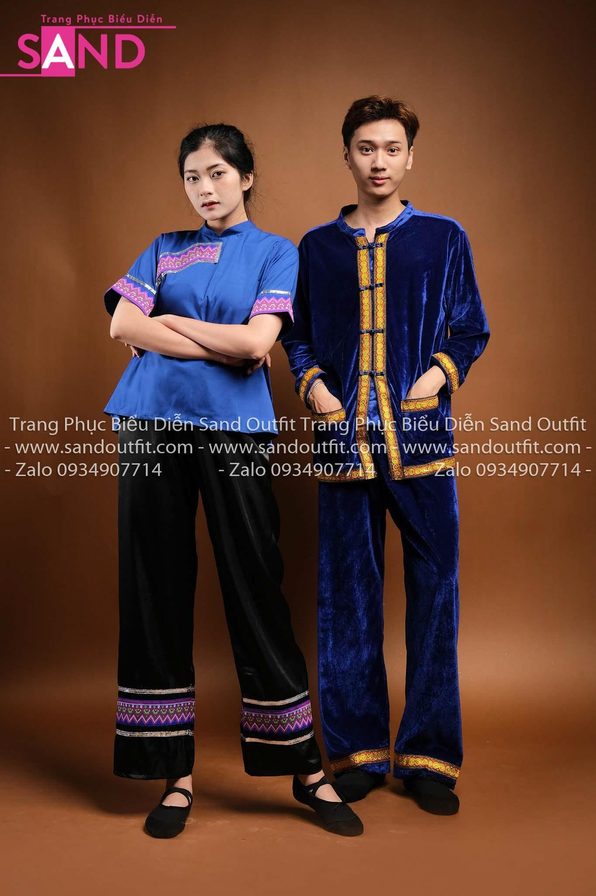
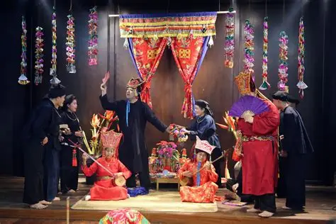

Khám phá văn hóa truyền thống của người Việt

Trang phục truyền thống của người Nùng chủ yếu sử dụng màu chàm đen, được nhuộm từ cây chàm tự nhiên. Phụ nữ thường mặc áo năm thân, váy hoặc quần dài đơn giản nhưng tinh tế.
Người Nùng có nhiều lễ hội dân gian đặc sắc gắn liền với tín ngưỡng nông nghiệp và đời sống cộng đồng.
Làn điệu dân ca nổi tiếng của người Nùng.
Hình thức giao duyên trong các lễ hội.

Di sản văn hóa gắn với đời sống tâm linh.
Ẩm thực người Nùng mang đậm hương vị vùng núi Đông Bắc, sử dụng nhiều nguyên liệu tự nhiên.
 Dân tộc Nùng
Dân tộc Nùng
Dân tộc Nùng
Dân tộc Nùng